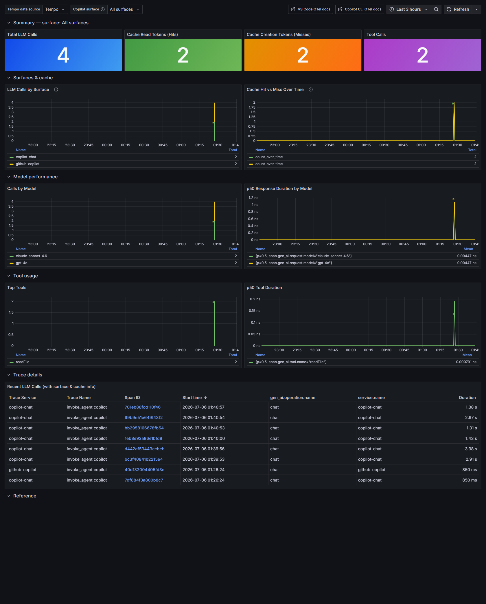

Two surfaces, one vocabulary — so one dashboard.
VS Code Copilot Chat and the Copilot CLI both emit the OpenTelemetry GenAI conventions. The attributes are identical; they differ in exactly one thing — service.name. Turn that into a dropdown and two data streams become one board.
resource.service.name = copilot-chat
Enable with four github.copilot.chat.otel.* user settings, or the same env vars.
resource.service.name = github-copilot
Enable with OTEL_* env vars. Same telemetry engine, shared with the Copilot SDK.
Which Copilot surfaces emit OpenTelemetry?
Not all of them — yet. This project covers the two you can collect from today — VS Code and the CLI (the desktop Copilot app rides on the CLI) — plus the SDK for apps you build. No overclaiming.
Traces, metrics, and events — the questions they answer.
Every interaction is a span tree: invoke_agent → chat → execute_tool. All of it follows the GenAI conventions, so the same queries work on both surfaces.
Prompt‑cache efficiency
Hit vs miss over time, per model, per surface.
gen_ai.usage.cache_creation
Tokens & cost
Input/output/cached tokens, cost and AI units per turn.
github.copilot.cost · aiu
Speed
Duration and time‑to‑first‑token, sliced by model.
time_to_first_token
Tool usage & reliability
Which tools run, how often, how slow, how often they fail.
Adoption & impact
Edits accepted, lines shipped, edit survival, thumbs, PRs.
edit.survival · pull_request
Errors & sessions
Error types, stuck/aborted sessions, context compaction.
One board. Flip the selector.
Cache hit/miss, calls by surface, models, tools, and a raw trace table — filtered to VS Code, the CLI, or both.

The All (VS Code + CLI) view, running on local Grafana + Tempo.
From a laptop to a fleet — four backends.
Same surfaces, same dashboard. Start local and offline; grow into your Azure tenant or Grafana Cloud. None of them needs a paid Grafana instance.
Local
Docker: Grafana Tempo + Grafana. Offline, private.
Azure · local collector
Collector fans out to Tempo and Application Insights.
Azure Container Apps
Cloud collector, scale‑to‑zero. Nothing runs locally.
Grafana Cloud
Point straight at managed Tempo. Nothing to run.
Private by default.
The question that decides whether you can roll this out — answered plainly.
Telemetry goes to your endpoint, not GitHub. Enabling OTLP export routes data to the collector or backend you configure. It doesn't send anything extra to GitHub or Microsoft.
No prompts, code, or responses by default. Content capture is off — the GenAI conventions' deliberate opt‑in. You get metadata: model, token counts, durations, tool names, cache hits/misses.
Know the two identifying bits. VS Code attaches repo URL / branch / commit / org; the CLI attaches a pseudonymous user id. MCP server names are SHA‑256 hashed.
The collector is your redaction control point. On the collector backends you can delete or hash attributes (e.g. drop github.copilot.git.*) before anything leaves.
You choose where data lives. On your laptop, in your Azure region (pick an EEA region for residency), or Grafana Cloud's SaaS. Content capture, if you ever turn it on, only against a backend you own.
Clone, compose, chat.
The local path (Option A) needs no cloud account and costs nothing.
Bring up the stack
Grafana Tempo receives OTLP; Grafana serves the dashboard on port 3001.
# clone, then
docker compose up -dPoint Copilot at it
Four keys in your VS Code User settings — and the CLI reads the same via env vars.
{
"github.copilot.chat.otel.enabled": true,
"github.copilot.chat.otel.exporterType": "otlp-http",
"github.copilot.chat.otel.otlpEndpoint": "http://localhost:4318",
"github.copilot.chat.otel.captureContent": false
}Use Copilot, then watch
Ask Copilot Chat a few questions or run copilot, then open the board and flip the surface selector.
# open
http://localhost:3001 # → GitHub Copilot OTel — VS Code + CLI